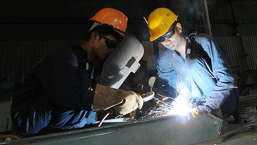
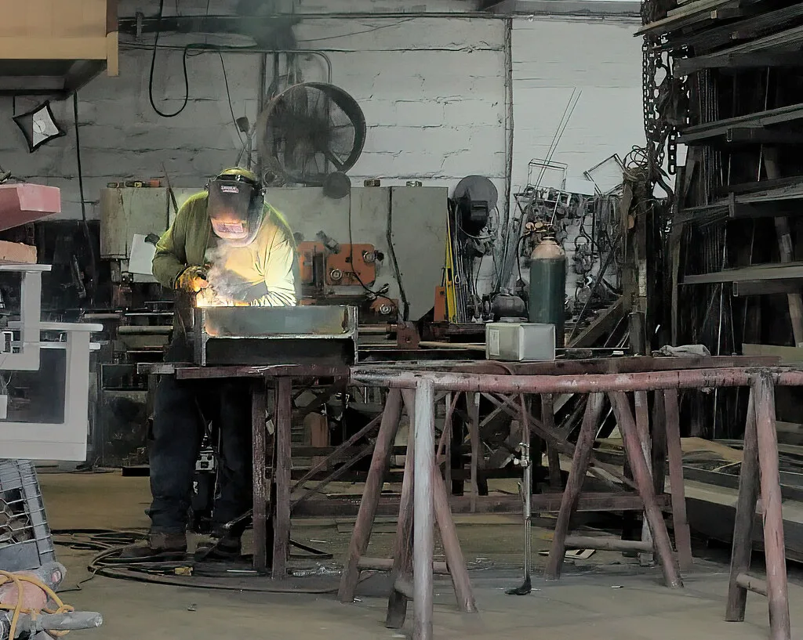

전남 영암의 HD현대삼호 조선소에서 20대 협력업체 용접노동자가 작업 중 쓰러져 숨지는 사고가 발생했다. 지난 3일 오후 6시 10분경 건조 중인 선박 내부 탱크에서 협력업체 다한산업 소속 20대 노동자 A씨가 쓰러진 채 발견됐다. A씨는 곧바로 심폐소생술을 받으며 목포 한국병원으로 이송됐지만 끝내 숨을 거뒀다.
사고 당시 상황은 이렇다. A씨는 선박 내부의 밀폐된 공간에서 용접 작업을 준비하던 중 어지럼증을 느껴 현장 반장에게 전화를 걸었다. 반장은 A씨에게 작업을 멈추고 밖으로 나와 쉬라고 지시했지만, A씨가 시간이 지나도 모습을 드러내지 않자 현장을 직접 확인했고 쓰러져 있는 A씨를 발견했다. HD현대삼호 측은 "사고 당시 실제 용접 작업이 진행 중이었던 것은 아니며, 2인 1조 작업을 준비하던 과정에서 쓰러진 것으로 파악하고 있다"고 설명했다.

사고 원인으로는 밀폐공간 내 유해가스가 지목되고 있다. 현장 감식 결과 A씨가 작업을 준비하던 밀폐공간 내부에서 용접 과정에 쓰이는 이산화탄소가 높은 농도로 검출된 것으로 알려졌다. 다만 작업 전 산소 및 유해가스 농도 측정, 환기설비 가동 등 법정 안전조치가 제대로 이행됐는지는 아직 확인되지 않은 상태다. 밀폐공간 작업은 산업안전보건법상 사전 가스 농도 측정과 환기, 감시인 배치 등이 의무화돼 있는 대표적인 고위험 작업으로 분류된다.
노동계는 즉각 반발했다. 민주노총 전남본부는 성명을 통해 작업 전 산소·유해가스 농도를 실제로 측정했는지, 환기설비가 정상 가동됐는지, A씨가 어지럼증을 호소한 이후 현장 관리자가 어떻게 대응했는지를 명확히 조사해야 한다고 촉구했다. 이들은 또 고용노동부에 특별근로감독을 요구하며 조선소 내 안전관리 체계 전반에 대한 점검을 요구하고 나섰다.

이번 사고가 더욱 뼈아프게 받아들여지는 이유는 공교로운 시점 때문이다. HD현대삼호는 불과 두 달 전 국무총리로부터 안전 관리 유공으로 표창을 받은 바 있다. 그런데 표창을 받은 지 두 달 만에 또다시 청년 노동자가 목숨을 잃는 사고가 발생하면서, 현장에서 실제로 작동하는 안전관리 체계와 대외적으로 평가받는 안전 실적 사이의 괴리에 대한 비판이 커지고 있다. 조선업 호황으로 수주 물량이 늘어나는 와중에 현장 인력과 공정이 빠듯하게 돌아가면서, 안전 점검에 들이는 시간이 뒷전으로 밀리는 것 아니냐는 우려도 함께 제기된다.
조선업계에서는 협력업체 노동자가 밀폐공간이나 고위험 작업에 투입되는 구조적 문제가 반복적으로 지적돼 왔다. 원청과 하청 간 안전관리 책임 소재가 불분명한 상황에서 하청 노동자들이 상대적으로 위험한 공정에 배치되는 경우가 많다는 지적이다. 특히 선박 건조 공정 특성상 내부 탱크나 격실처럼 환기가 어려운 밀폐공간 작업이 필수적으로 발생하는데, 이런 공간일수록 사전 가스 농도 측정과 감시인 배치 같은 기본 수칙이 지켜지는지가 생사를 가르는 변수가 된다. 고용노동부는 이번 사고에 대해 중대재해처벌법 적용 여부를 포함한 조사에 착수한 것으로 알려졌으며, 조사 결과에 따라 원청의 안전관리 책임 범위를 둘러싼 논의도 한층 뜨거워질 전망이다. 유족과 노동계는 재발 방지를 위한 구체적인 대책 마련과 함께, 사고 경위에 대한 투명한 조사 결과 공개를 요구하고 있다.